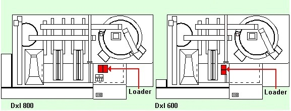
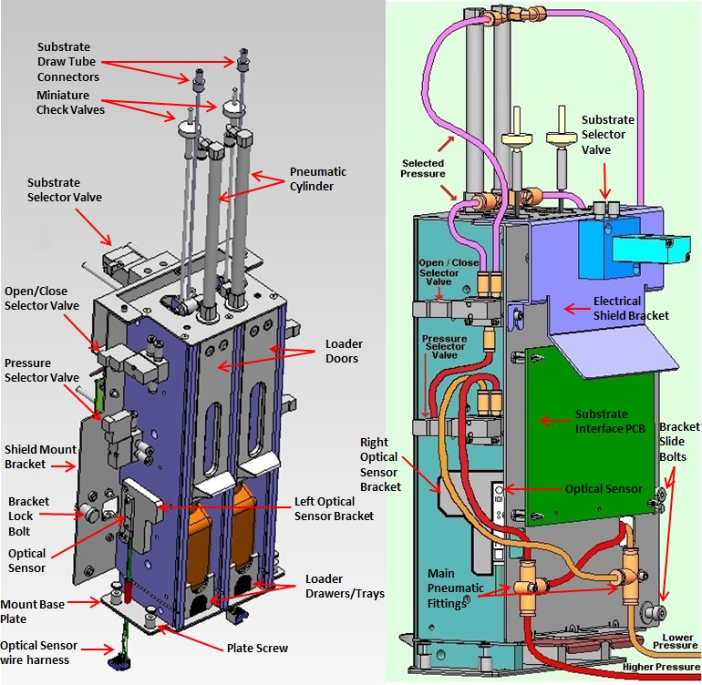
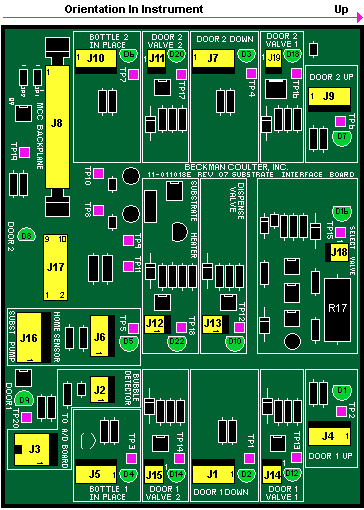
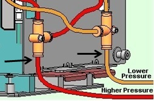
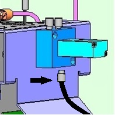
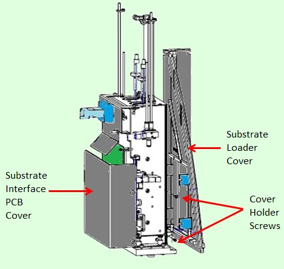

Replacing Substrate Loader Assembly
Purpose
This procedure describes how to replace the Substrate Loader.
When to Perform
Perform this procedure when:
- Replacing the existed Substrate Loader.
- Installing the new loader or upgrading system to a new loader with optical/reflective sensors.
- Loader is defective or has repeating hardware and substrate issues.
Caution: Use proper PPE when performing this procedure. Handle the Substrate Loader with care to avoid damages to all attached components.
Reference Figures
Refer to these following figures when performing this procedure.

Note: New Substrate Loader has couple new components and design changes. The new loader components are not compatible to the old style loader. Refer to
Fluidics: Substrate System Operating Principles document for more details.


-
Remove the Substrate Loader.
Remove the Substrate Loader from DxI 800 System.
- Open the upper right cover.
- Remove the power from the motors by turning off the switch on the Power Distribution PCB labeled "All DC power (except CPU and reagent coolers)."
- Locate the Substrate Loader.
Note: Refer to Figure 1 for locating the Substrate Loader.
- Remove the Substrate bottles in the loader.
- Unscrew the four plate screws on both loader bottom sides.
Note: The screws are spring loaded and can be pressed to release after loosening them.
- Pull the slide lock bolt on the left side of mount bracket and gently slide the loader all the way up.
Note: Sliding the loader all the way up will free the loader from two slide bolts attached on the back of the loader mount bracket.
- Slightly pull the loader from the slide and set it down.
Caution: Do not pull the loader all the way out to avoid damages to electrical connectors, ribbon cable, pneumatic tubing.
- Slightly turn the loader clock-wise to access the Substrate Interface PCB and pneumatic tubing on the back of the loader.
- Disconnect the followings on the loader:
- High Pressure (Sub Load Right) and Low Pressure (Sub Load Left) pneumatic tubing from the instrument on the back main pneumatic tubing fittings.
Note: Press up on the fittings to release the tubing.Note: Pulling the tubing out with force will degrade or shrink the tubing.

- Substrate Pump main input tubing on the Substrate Selector Valve.
Note: Cover the Substrate tubing with an absorbent pad or towel to avoid substrate leaking on instrument or nearby area.Note: Gently turn the tubing nut counter-clock-wise to loosen the tubing.

Note: Refer to Figure 3 for disconnecting the connections on the Substrate Interface PCB. - J8 - J74 MCC Backplane ribbon cable PCB.
- J17 - Substrate Interface Harness on PCB.
- J16 - Substrate Pump motor on PCB.
- J6 - Substrate Pump home sensor on PCB.
- J12 - Substrate Pump heater on PCB.
- J13 - Substrate Pump Dispense Valve on PCB.
- High Pressure (Sub Load Right) and Low Pressure (Sub Load Left) pneumatic tubing from the instrument on the back main pneumatic tubing fittings.
- Gently remove the Substrate Loader from the instrument.
Remove the Substrate Loader from DxI 600 System.Important: Substrate Loader on the DxI 600 is mounted side-way to a Substrate Loader Cover attached to the instrument. The loader also has a Substrate Interface PCB cover installed, which the loader on the DxI 800 does not have.
- Open the upper left and upper right covers.
- Remove the power from the motors by turning off the switch on the Power Distribution PCB labeled "All DC power (except CPU and reagent coolers)."
- Locate the Substrate Loader.
Note: Refer to Figure 1 for locating the Substrate Loader.
- Remove the cover holder screws on the loader to free the loader from the instrument .
Note: Do not loose the screws, they will be reused.
- Unscrew the four plate screws on both loader bottom sides.
Note: The Substrate Loader is installed side way, two screws facing the instrument may require extension tool to loosen them.
- Pull the Substrate Interface PCB cover slide lock bolt on the left side and gently slide the cover all the way up until the cover is free from loader.
- Remove the PCB cover to access the Substrate Interface PCB and pneumatic tubing on the back of the loader.
Note: Reinstall the cover back in place after removing all require connectors or connections.
- Disconnect the followings on the loader:
- High Pressure (Sub Load Right) and Low Pressure (Sub Load Left) pneumatic tubing from the instrument on the back main pneumatic tubing fittings.
Note: Press up on the fittings to release the tubing and gently pull the tubing out.Note: Pulling the tubing out with force will degrade or shrink the tubing.
- Substrate Pump main input tubing on the Substrate Selector Valve.
Note: Cover the Substrate tubing with an absorbent pad or towel to avoid substrate leaking on instrument or nearby area.Note: Gently turn the tubing nut counter-clock-wise to loosen the tubing.Note: Refer to Figure 3 for disconnecting the connections on the Substrate Interface PCB.
- J8 - J74 MCC Backplane ribbon cable on PCB.
- J17 - Substrate Interface Harness on PCB.
- J16 - Substrate Pump motor on PCB.
- J6 - Substrate Pump home Sensor on PCB.
- J12 - Substrate Pump heater on PCB.
- J13 - Substrate Pump Dispense Valve on PCB.
- High Pressure (Sub Load Right) and Low Pressure (Sub Load Left) pneumatic tubing from the instrument on the back main pneumatic tubing fittings.
- Gently remove the Substrate Loader from the instrument.
-
Install the New Substrate Loader.
Install the New Substrate Loader on DxI 800 System.
- Inspect the New Substrate Loader to ensure all components are attached.
Note: Refer to Figure 2 and 3 to ensure the followings:
- Loader doors are open and close freely.
- Bottle straws or draw tubes are straight and not broken.
- Drawers or trays are properly latched.
- All pneumatic tubing are not kinked or damaged and properly connected.
- All bottle sensors, pneumatic valves, and selector valve connections are not damaged and properly connected on the Substrate Interface PCB.
Note: If there are damaged components, replace them before continuing. - Gently place the loader on its designated install location.
Note: Refer to Figure 1 for locating the Substrate Loader.
- Slightly turn the loader clock-wise to access the Substrate Interface PCB and pneumatic connections.
- Connect the followings to the loader:
- High Pressure (Sub Load Right) and Low Pressure (Sub Load Left) pneumatic tubing from the instrument to the loader main pneumatic connectors.
Note: Inspect both tubing before installing:
- Do not install tubing if there are damages or tears. Replace the tubing before continuing.
- If the tubing insert tips have damages, trim the tips properly before continuing.
Note: On the Substrate Loader: High pneumatic is the right tubing and Low pneumatic is the left tubing coming from the instrument. Ensure to connect the tubing correctly.Note: Press up on the fittings to insert the tubing. - Substrate Pump main input tubing to the Substrate Selector Valve.
Note: Do not over tighten the tubing nut to avoid damages to the tubing fitting.Note: Gently turn the tubing nut clock-wise to tighten the tubing.Note: Refer to Figure 3 for connecting the connections on the Substrate Interface PCB.
- J74 MCC Backplane Ribbon cable to J8 on the PCB.
- Substrate Interface Harness to J17 on the PCB.
- Substrate Pump motor to J16 on the PCB.
- Substrate Pump home sensor to J6 on the PCB.
- Substrate Pump heater to J12 on the PCB.
- Substrate Pump Dispense Valve to J13 on the PCB.
- High Pressure (Sub Load Right) and Low Pressure (Sub Load Left) pneumatic tubing from the instrument to the loader main pneumatic connectors.
- Lift the loader up and gently fit the two slide bolts on the back of the loader mount bracket into the instrument bracket.
- Gently pull the slide lock bolt and slide the loader all the way down.
- Gently let go of the slide lock bolt and ensure it locks the loader in place.
Note: If the loader is not locked in place, slightly slide the loader up and then down until the locking bolt is clicked in place.
- Screw in the four plate screws on the both loader bottom sides.
Note: The screws are spring loaded, careful not to damage the springs.
- Load two original substrate bottles or empty bottles to the loader.
Important: If there are no substrate bottles loaded, instrument will not initialize.
- Restore the power to the motors by turning on the switch on the Power Distribution PCB labeled "All DC power (except CPU and reagent cooler)."
- Close the upper right cover.
- Reinitialize the System.
Note: If System fails to initialize due to loader hardware issues, refer to the following procedures for troubleshooting:
- Decontaminate the Substrate System. Refer to Fluidics: Decontaminating Substrate procedure for details.
Install the New Substrate Loader on DxI 600 System.Note: Substrate Loader on the DxI 600 is mounted side-way to a Substrate Loader Cover attached to the instrument. The loader also has a Substrate Interface PCB cover installed, which the loader on the DxI 800 does not have.- Inspect the New Substrate Loader to ensure all components have no damages and properly attached.
Note: Refer to Figure 2 and 3 to ensure the followings:
- Loader doors are open and close freely.
- Bottle straws or draw tubes are straight and not broken.
- Drawers or trays are properly latched.
- All pneumatic tubing are not kinked or damaged and properly connected.
Note: Remove the Substrate Interface PCB cover to access the PCB to check the PCB connections and access to the main pneumatic tubing fittings.
- Gently pull the slide lock bolt on the loader and gently slide the Substrate Interface PCB cover all the way up until the cover is free from loader.
- Remove the cover and set it to the side.
Important: The PCB cover must be reinstalled back in place to avoid any damage to the Substrate Interface PCB.
- All bottle sensors, pneumatic valves, and selector valve connections are properly connected on the Substrate Interface PCB.
Note: If there are damaged components, replace them before continuing.
- Gently slide the loader side way toward the right of the loader cover attached on the instrument.
Note: Ensure the loader fits properly onto the loader cover.
- Connect the followings to the loader:
- High Pressure (Sub Load Right) and Low Pressure (Sub Load Left) pneumatic tubing from the instrument to the loader main pneumatic connectors.
Note: On the Substrate Loader: High pneumatic is the right tubing and Low pneumatic is the left tubing coming from the instrument. Ensure to connect the tubing correctly.Note: Press up on the fittings to insert the tubing.
- Substrate Pump main input tubing to the Substrate Selector Valve.
Note: Do not over tighten the tubing nut to avoid damages to the tubing fitting.Note: Gently turn the tubing nut clock-wise to tighten the tubing.Note: Refer to Figure 3 for connecting the connections on the Substrate Interface PCB.
- J74 MCC Backplane Ribbon cable to J8 on the Substrate Interface PCB.
- Substrate Interface Harness to J17 on the PCB.
- Substrate Pump motor to J16 on the PCB.
- Substrate Pump home sensor to J6 on the PCB.
- Substrate Pump heater to J12 on the PCB.
- Substrate Pump Dispense Valve to J13 on the PCB.
- High Pressure (Sub Load Right) and Low Pressure (Sub Load Left) pneumatic tubing from the instrument to the loader main pneumatic connectors.
- Screw in the two cover holder screws on the loader to hold the loader and loader cover together.
- Screw in the four plate screws on both loader bottom sides.
Note: The screws are spring loaded, careful not to damage the springs.Note: The Substrate Loader is installed side way, two screws facing the instrument may require extension tool to tighten them.
- Gently pull the slide lock bolt and insert the Substrate Interface PCB cover to fit the two slide bolts on the back of the loader mount bracket.
- Gently slide the PCB cover all the way down and let go the lock bolt to lock the cover in place.
Note: If the PCB cover is not locked in place, slightly slide the cover up and then down until the locking bolt is clicked in place.
- Load two original substrate bottles or empty bottles to the loader.
Important: If there are no substrate bottles loaded, instrument will not initialize.
- Restore the power to the motors by turning on the switch on the Power Distribution PCB labeled "All DC power (except CPU and reagent cooler)."
- Close the upper left and upper right covers.
- Reinitialize the System.
Note: If System fails to initialize due to loader hardware issues, refer to the following procedures for troubleshooting:
- Decontaminate the Substrate System. Refer to Fluidics: Decontaminating Substrate procedure for details.
- Inspect the New Substrate Loader to ensure all components are attached.
-
System Verifications.
- Prime the System and check for leaks.
- Run System Check.
Note: If System Check fails, refer to the following procedures for troubleshooting: